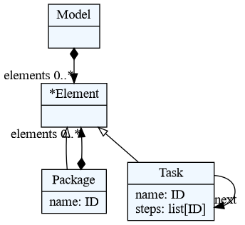
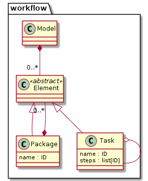

Developing Domain-Specific Languages in Python with textX
Igor Dejanović (igord at uns ac rs)
Strumenta Meetups, 24 February 2022
Created 2024-09-30 Mon 19:45, press ESC for overview and use arrow keys for movement, press Ctrl+Shift+F for search
Table of Content
- 1. Overview
- 2. A brief history
- 3. Setup
- 4. Hello World
- 5. Hello from file
- 6.
textxcommand - 7. Grammar check
- 8. Running example - Workflow DSL
- 9. Visualize (meta-)model
- 10. Some differences to xText
- 11. Language/generator registration
- 12. Scoping and RREL
- 13. Project scaffolding
- 14. textX-LS
- 15. A more complex example - PyFlies
- 16. Where to go next?
1. Overview

2. A brief history
- An idea to implement xText in Python
- Initial release in 2014
- 1.0 - 2016, 2.0 - 2019, 3.0 is going to happen soon
- 2017 - Vincent Aranega - pyEcore integration
- 2018 - Pierre Bayerl joins the project - Bus factor improved :)
- 570 stars, 64 forks, 18 contributors on GitHub
3. Setup
To create Python environment
python -m venv venv
then, activate the environment and install textX.
source venv/bin/activate
pip install textx[cli]
4. Hello World
model = """
hello You, Me; Everybody
"""
mm_str = r"""
Hello: 'hello' to_greet+=Who[/,|;/];
Who: name=ID;
"""
from textx import metamodel_from_str
mm = metamodel_from_str(mm_str)
m = mm.model_from_str(model)
print([who.name for who in m.to_greet])
['You', 'Me', 'Everybody']
See: matches, assignments, and rule types.
5. Hello from file
In file hello.tx:
Hello: 'hello' to_greet+=Who[/,|;/];
Who: name=/[^,;]+/;
In file model.hello:
hello World, Solar System; Universe
In file hello.py:
from textx import metamodel_from_file
def who_processor(who):
who.name = who.name.strip()
mm = metamodel_from_file('hello.tx')
mm.register_obj_processors({'Who': who_processor})
print(mm)
m = mm.model_from_file('model.hello')
print([who.name for who in m.to_greet])
<textx.metamodel.TextXMetaModel object at 0x7f5add1b7dc0> ['World', 'Solar System', 'Universe']
6. textx command
Used for checking the grammar, investigating languages and generators and running generators.
$ textx --help
Usage: textx [OPTIONS] COMMAND [ARGS]...
Options:
--debug Debug/trace output.
--help Show this message and exit.
Commands:
check Check/validate model given its file path.
generate Run code generator on a provided model(s).
list-generators List all registered generators
list-languages List all registered languages
version Print version info.
7. Grammar check
textx check --grammar hello.tx model.hello
Error: None:1:1: error: Expected 'hello' at position /home/igor/repos/igordejanovic.github.io/presentations/2022-Strumenta/model.hello:(1, 1) => '*hi World, '.
8. Running example - Workflow DSL
A tiny workflow DSL will be used in the rest of the slides.
8.1. Model/Program
An example in this language might look like:
package BuildHouse {
task buyLand {
searchAds, chooseLand, buyLand
next makePlan
}
task makePlan {
searchforArchitect, giveInstructions, choosePlan
next buildHouse
}
task buildHouse {
buildHouse
}
}
package BuildFence {
task buildFence {
chooseMaterial, buildFence
}
}
8.2. Metamodel/Grammar
Model: elements*=Element;
Element: Package | Task;
Package: 'package' name=ID '{'
elements*=Element
'}';
Task: 'task' name=ID '{'
steps+=ID[',']
('next' next=[Task])?
'}';
8.3. Check/use the language
from textx import metamodel_from_file
mm = metamodel_from_file('workflow.tx')
model = mm.model_from_file('example.workflow')
print(model)
<textx:workflow.Model instance at 0x7f655fbd4340>
textx check --grammar workflow.tx example.workflow
/home/igor/repos/igordejanovic.github.io/presentations/2022-Strumenta/example.workflow: OK.
9. Visualize (meta-)model
Visualization is done using textX’s generator framework.
$ textx list-generators
any -> dot textX[2.3.0] Generating dot visual...
textX -> dot textX[2.3.0] Generating dot visual...
textX -> PlantUML textX[2.3.0] Generating PlantUML v...
To visualize (meta-)model we use generators that produce dot or plantuml outputs.
textx generate workflow.tx --target dot --overwrite
dot file can be visualized either by transforming to an image using dot tool
(part of GraphViz):
dot -Tpng -O workflow.dot

Or opening it in some dot visualizer, e.g. xdot.
Similarly, we can produce PlantUML diagram by specifying plantuml target.
textx generate workflow.tx --target plantuml --overwrite
Generating plantuml target from models:
/home/igor/repos/igordejanovic.github.io/presentations/2022-Strumenta/workflow.tx
-> /home/igor/repos/igordejanovic.github.io/presentations/2022-Strumenta/workflow.pu
To convert to png run "plantuml workflow.pu"
And then convert it to png image using plantuml:
plantuml workflow.pu

You get a nice UML diagrams directly from your grammars.
10. Some differences to xText
A few notes for those familiar with xText.
10.1. Lexical grammar
textX doesn’t have a separate lexical grammar. There are Match rules that resembles something close to lexical grammar but not quite.
10.2. Assignments
textX integrates repetition and assignments:
In xText you would write:
Domainmodel :
(elements+=Type)*;
While in textX it would be:
Domainmodel :
elements*=Type;
Optional assignment in xText:
static?='static'?
In textX:
static?='static'
10.3. Regex matches
textX has simple string matches (like 'something to match') and regex matches
where you can use a full power of Python regex engine inside /.../.
For example:
Person:
name=/[a-zA-Z]+/ age=INT;
10.4. Repetition modifiers
textX provides a syntactic construct called repetition modifier which enables parser to be altered during parsing of a specific repetition expression.
xText:
list_of_ints+=INT (',' list_of_ints+=INT)*
textX:
list_of_inst+=INT[',']
Modifier can also be a regex match:
list_of_ints+=INT[/,|;/]
Repetition modifier can be applied to any repetition (zero or more, one or more, optional, unordered group).
(First /\d+/ Second)*[',']
Besides matches there are other modifiers. For example EOL terminator:
STRING*[',', eolterm]
would match the first line of:
"first", "second", "third" , "fourth"
10.5. Unordered groups
Xtext support unordered groups using the & operator.
Modifier:
static?='static'? & final?='final'? & visibility=Visibility;
enum Visibility:
PUBLIC='public' | PRIVATE='private' | PROTECTED='protected';
In textX unordered groups are specified as a special kind of repetitions. Thus, repetition modifiers can be applied also:
Modifier:
(static?='static' final?='final' visibility=Visibility)#[',']
Visibility:
'public' | 'private' | 'protected';
match:
private, static, final
static, private, final
public, static
private
...
10.6. Scoping
Scoping in textX is done either by using Python through registration of scope providers, or declaratively using Reference Resolving Expression Language.
Xtext provides a Scoping API which can be used by the Xtend code to specify scoping rules.
10.7. More differences
For more differences please see this page.
11. Language/generator registration
11.1. Create language description
from textx import LanguageDesc
def entity_metamodel():
# Construct and configure the meta-model
# e.g. by calling metamodel_from_file
...
entity_lang = LanguageDesc(
'entity',
pattern='*.ent',
description='Entity-relationship language',
metamodel=entity_metamodel)
11.2. Programmatic registration
LanguageDesc instance can be registered programmatically by the
register_language function:
from textx import register_language
register_language(entity_lang)
The meta-model can be accessed from any Python program like this:
from textx import metamodel_for_language
lang_mm = metamodel_for_language('entity')
11.3. Declarative registration
- Registration can be done declaratively using
setup.pyorsetup.cfg.
setup(
...
entry_points={
'textx_languages': [
'entity = entity.metamodel:entity_lang',
],
},
11.4. Using a decorator
There is a convenient language decorator to make registration easier.
from textx import language
@language('entity', '*.ent')
def entity_lang():
"""
Entity-relationship language
"""
# Create, configure and return an instance of the meta-model
...
12. Scoping and RREL
In a link rule reference, the name matched at the location must be resolved to the referenced object.
For example
Attribute: 'attr' ref=[Class] name=ID ';';- Global search by default.
- Programmatic scoping providers may be registered to resolve references.
12.1. RREL
Declarative specification of reference resolving strategy.
Example:
Attribute: 'attr' ref=[Class|FQN|^packages*.classes] name=ID ';';
12.2. RREL operators and markers
.- dot navigation. Searches for the attribute in the current AST context.- e.g.
.is this object,..is parent,...is a parent of a parent - relative lookup. Example:
.a.b
- e.g.
~- do not consume name.~extends*.methods- search for method name in the inheritance hierarchy.
*- repeat/expand -.~extends*.methodsexpands to:.methods,.~extends.methods,.~extends.~extends.methods…^- bottom-up search. Example^packages*.classesexpands to.classes,..packages.classes,...packages.packages.classes…
12.3. Extending example to use FQN
12.3.1. Model
package BuildHouse {
task feasibility DONE {
next buyLand
}
task buyLand DONE {
searchAds, findLand, buyLand
next makePlan
}
task makePlan DOING {
chooseArchitect, giveInstructions, choosePlan
next buildHouse
}
task buildHouse TODO {
buildHouse
next BuildFence.feasibility
}
task moveIn {}
}
package BuildFence {
task feasibility TODO {}
task buildFence {
chooseCompany, giveInstructions, buildFence
next BuildHouse.moveIn
}
}
12.3.2. Meta-model
Model: elements+=Element;
Package: 'package' name=ID '{'
elements+=Element
'}';
Element: Package | Task;
Task: 'task' name=ID (state=State)? '{'
steps*=Step[',']
('next' next+=[Task|FQN|^elements*.elements][','])?
'}';
State: 'TODO' | 'DOING' | 'DONE';
Step: !'next' ID;
FQN: ID+['.'];
Comment: /\/\/.*/;
13. Project scaffolding
$ textx startroject <folder>
Command asks a few questions and generates the project files. To install the generated project in developers mode (editable):
$ pip install -e <folder>
After installation the language (or generator) is visible to the textx
list-languages or textx list-generators commands.
startproject command is not defined in the base textX library but in textX-dev
package. Thus to have it registered we must install this project:
pip install textX-dev
Alternatively, we can install all dev dependencies:
pip install textX[dev]
14. textX-LS
- textX-LS is a language server that provides smartness for all domain specific languages based on textX.
- Consists of three parts: core, server and VS Code client.
- Uses two textX generators:
- textx-gen-vscode - generates VS Code extension for registered textX language.
- textx-gen-coloring - generates TextMate compatible syntax highlighting (e.g. VSCode).
15. A more complex example - PyFlies
- PyFlies is Domain-Specific Language (DSL) for designing experiments in psychology
16. Where to go next?
- textX docs and tutorials
- Alessio Stalla, Quick Domain-Specific Languages in Python with textX
- textX discussions and the issue tracker